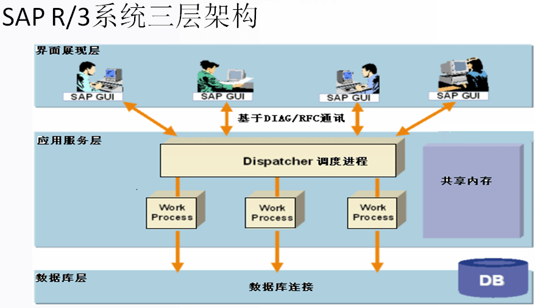
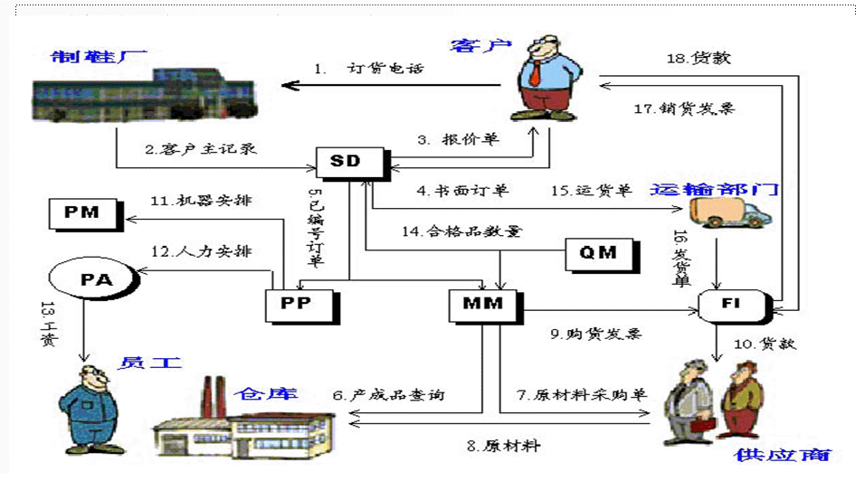

SAP系统介绍
SAP R/3中的S代表系统（Systems），A代表应用软件（Applications），P代表产品（Products）。R/3意味着这是SAP软件第三次发布的版本。用一句话来概括，SAPR/3是SAP公司开发的客户机/服务器环境下的套装软件，可用于处理一个公司中几乎所有的经营管理任务，常见的诸如发票支付、生产资源的管理、财务控制等等都包含在其中。
SAP模块
模块
- FI 应收、应付、总帐、合并、投资、基金、现金等；
- CO 利润及成本中心，产品成本、项目会计、获利分析等；
- AM 固定资产、技术资产、投资控制等；
- SD 销售计划、询价报价、订单管理、运输发货、发票等；
- MM 采购、库房管理、库存管理、MRP、供应商评价等；
- PP 工厂数据、生产计划、MRP、能力计划、成本核算等；
- QM 质量计划、质量检测、质量控制、质量文档等；
- PM 维护及检测计划、单据处理、历史数据、报告分析等；
- HR 薪资、差旅、工时、招聘、发展计划、人事成本等；
- PS 项目计划、预算、能力计划、资源管理、结果分析等；
- WF 工作定义、流程管理、电子邮件、信息传送自动化等；
- PI SAP与其他系统的集成；
- IS 针对不同行业提供特殊应用。
- 基础部分：R/3系统内核、数据库、支持各类平台的接口、ABAP/4工具语言等。
业务示例
这个公司是一生产运动鞋的主要厂家。它希望能够增加在运动鞋市场上的占有率，所以发起了一场促销活动，宣传它生产的某种鞋，并允诺以优惠价出售。促销活动发起后不久，就收到了公司的一位潜在客户打来的电话，他想尽快买到4000双这种鞋子。
公司得到此客户的详细信息后，就将其作为客户主记录（Customer MasterRecord）输入"销售与分发"模块（SD）的数据库中。所谓客户主记录，其中存储的是该公司与此客户的业务关系，包含如下条目：地址、付款方式、以往的销售记录和客户所在公司的代码等等。
这些信息输入SD模块后，就触发订单处理流程。首先，给该客户生成一份报价单，包括价格、数量、交货期和该报价单的有效期等信息。报价单发出几天后，公司收到了一份书面订单。现在可以输入这份订单了。订单的大部分的信息可以从客户主记录取得，因而无需重新输入。
订单输入完毕后，整个订货信息就被保存下来，由R/3系统自动给它分配一个订单编号。一旦订单被确认并赋予了一个订单号，订单信息就从SD模块传送到"物料管理"模块（MM）和"生产计划"模块（PP），以便开始这批鞋的生产。
MM模块从SD模块收到计划发送这4000双鞋的信息后，首先检查数据库中保存的库存信息，看当前可以提供的产成品数目。经查询，得知仓库中只有1000双这种鞋子。显然，要满足客户订单，还要生产3000双鞋子。于是，MM模块把仓库中现有的鞋和原料预留下来，再向公司的供应商去定购原料的不足部分。
当供应商将原料运到以后，仓库管理员便把这批到货的详细信息输入MM模块来更新库存信息。MM模块还能提供发票核查的功能，用来检查供应商开出的发票上记载的货项确实是公司定购的，并核实价格的正确性。经过核查的这些信息又被传送给"财务会计"模块（FI），由其决定付款方式并安排给供应商付款。
MM模块进行处理的同时，"生产计划"模块（PP）在为这批鞋的生产安排机器设备。它计算出为达到订单要求所需的机器工时。当PP模块为能按期交这笔货而制定机器使用计划时，发现需要推迟一台机器的维修。这个信息被送往"工厂维护"模块（PM），以作相应调整。
PP模块同时计算出人力工时，传送给"人事管理"模块（PA），由它来计算员工的工资。"质量管理"模块（QM）为保证产品质量而制定的一系列检测措施，则贯穿于整个生产过程中。当生产和测试都完成以后，最终可供货数目回送给MM和SD模块。
MM模块将生产好的产品计入库存。SD模块自动准备好装运单据，并安排把这批鞋子运送给那个客户。
在整个过程中，所有与财务有关的信息都从物流类模块送至FI模块。当FI模块被告知货物已发运时，它生成最终的销货发票。当客户付清货款后，FI模块更新总帐科目和客户数据库。
"控制"模块（CO）一直监控着来自物流类和人力资源类模块的信息。比如说，它使用这些信息来修改MM和PP等模块的配置，以便改进将来的生产流程处理。同时，CO模块提供一份整个生产流程的成本分析，可以用来指导销售部门将来的报价。直到这时，才算是完成了这批4000双鞋子订单的全部处理。